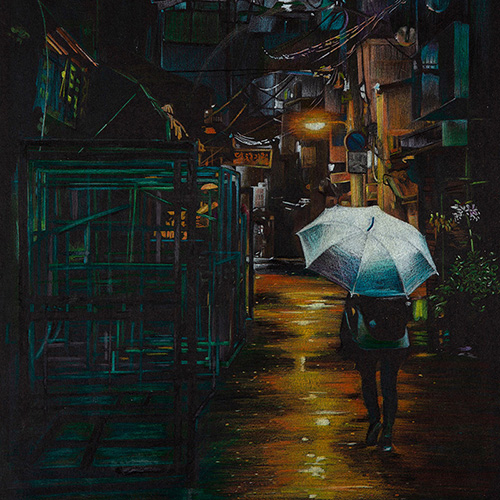
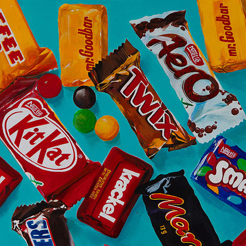
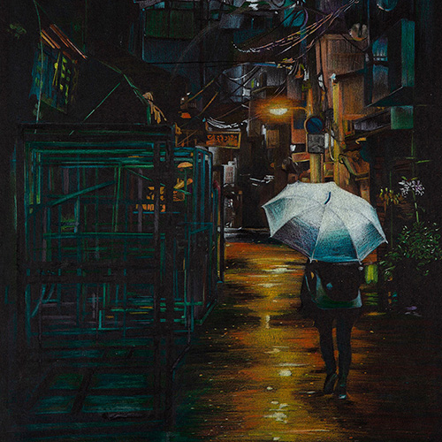
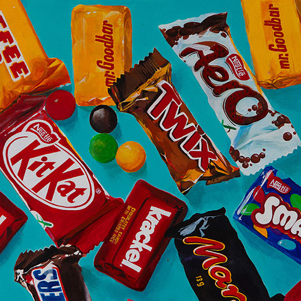

Hi, I'm Janie
I am an aspiring graphic and UI/UX designer
WORK
As a visual artist, I love to experiment with a wide range of mediums. Some of my favorites include color pencils, pen, watercolor, and acrylic paint. While I had created mostly two-dimensional pieces until my freshman year at college, I have been playing extensively with three-dimensional materials since this summer. I am planning to take elective studio courses such as Intro to Sculpture and Intro to Ceramics next semester, so that I can continue to develop interest and skills in this area.
As an aspiring graphic and UI/UX designer, I have also been working on digital platforms. Taking Typography has allowed me to refine my skills in Adobe Illustrator and InDesign. The assignments and projects I did for these courses are shown in the course work page. Feel free to take a look!
I have also been building my programming skills in HTML, CSS, and javascript. To further develop my coding skills, I am planning to take Programming and Introductory Data Structures, a computer science course in C++, next semester.

 


